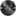

Credits
The Life in the Woods Renaissance mod-pack for Minecraft is the result
of a remarkable effort of many people providing their best of knowledge and skill to create
an extraordinary game experience for Minecraft players around the globe.
Phedran especially wants to express her gratitude to her "Patrons, without which this wouldn't
have been possible!"
- Mod-Pack Creation and Development Coordination
- Phedran (Amber Campbell)
- Launcher and Helper Mod
- Holger Machens
- Web Arts
- Eric Beaudu
- Life in the Woods Renaissance Song
- Kyle Landry
- Server Hosting
-  Vortex Servers
Main System Components
- Minecraft
- Mojang AB
- Minecraft Forge
- Forge Development LLC
All the Wonderful Mods
- Ancient Trees
- scottkillen
- Animals Plus
- Click_Me
- Antique Atlas
- Hunternif
- Apple Core
- Squeek502
- Auto Sapling
- lemonszz
- Backpacks
- Eydamos
- Better Foliage
- OctarineNoise
- BiblioCraft
- Nuchaz
- Biomes O' Plenty
- Adubbz
- Forstride (aka Glitchfiend)
- Carpenter's Blocks
- Mineshopper
- Code Chicken Lib and Code Chicken Core
- Chicken Bones
- Chisel 2
- TheCricket26
- AUTOMATIC_MAIDEN (original author)
- Default World Generator
- FireBall1725
- Dynamic Lights
- AtomicStryker
- Easy Crafting
- Lepko
- Enchanting Plus
- odininon (aka mssodin28)
- Qizzok (original author)
- xkyouchoux (original author)
- Extra Biomes XL
- Annysia
- allaryin
- MrFibre
- scottkillen
- Zenth
- Extra Buttons
- jaquadro
- Farseek
- delvr
- Garden Stuff
- jaquadro
- Gravestone
- Subaraki
- Hopper Ducts
- FyberOptic
- Hunger Overhaul
- Parker8283
- Inventory Tweeks
- Kobata
- Kore Sample
- scottkillen
- Not Enough Items
- Chicken Bones
- OptiFine
- sp614x
- Pam's Harvest Craft
- Pam
- Plant Mega Pack
- 10paktimbits
- Recipe API
- MrCrayfish
- Redstone Paste
- FyberOptic
- Ruins
- AtomicStryker
- Shaders Mod
- karyonix
- Simple Refinement
- FyberOptic
- Sound Filters
- Tmtravlr
- Storage Drawers
- jaquadro
- Streams
- delvr
- Underground Biomes Constructs
- Zeno410
- The Vegan Option
- Squeek502
- Waila
- ProfMobius
And the Awesome Shader Packs
- Sildur's Vibrant Shaders
- Sildur
|